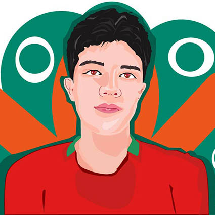

¡BIENVENIDOS!
Bienvenido al portafolio de Simón Martínez .
Es un placer darle la bienvenida a mi portafolio, en el cual encontraras información sobre mi formación académica, mis hobbies y sobre los trabajos que he realizado de manera individual y colectiva, en este proceso de formación, en la carrera de Diseño Gráfico.